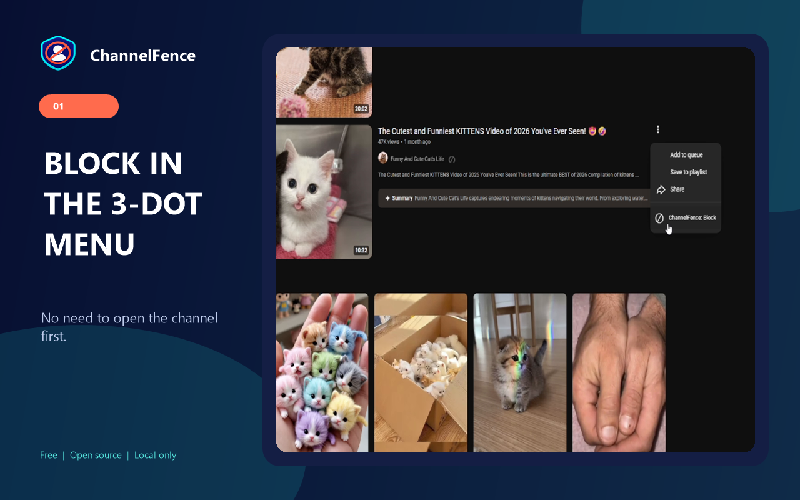
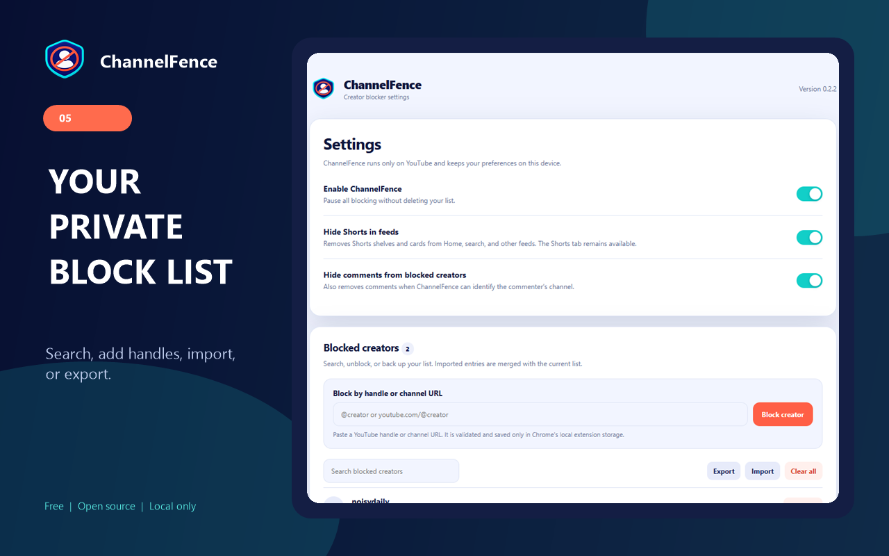

Block in one click
Use the button beside a creator or the ChannelFence action in a supported video's three-dot menu.
Free, open source, and local-only
Block a creator once across supported Home feeds, search, Watch Next, Shorts, comments, and direct visits.
No account. No extension analytics. No ads. Your block list stays in Chrome.

Use the button beside a creator or the ChannelFence action in a supported video's three-dot menu.
Paste a YouTube handle or channel URL into settings to build your block list directly.
Filter supported Home, search, Watch Next, Shorts, playlists, comments, and direct pages. Blocking in the Shorts viewer advances to the next Short.
Remove supported Shorts shelves and cards from feeds while keeping the Shorts tab and viewer available.
Why ChannelFence?
YouTube's "Don't recommend channel" changes recommendations. It is not a persistent site-wide creator block list. ChannelFence gives you an explicit list you can view, edit, back up, and apply across supported YouTube surfaces.
How it works

Privacy by design
ChannelFence stores your settings and block list locally in Chrome. It has no account system, extension analytics, advertising, remote code, or developer-controlled server. Its source and automated tests are public.
Guides and comparisons
Questions
Install ChannelFence, then click its ⊘ button beside the creator or choose ChannelFence: Block from a supported video's three-dot menu. You can also paste the creator's handle or channel URL in settings.
No. The list and settings remain in Chrome's local extension storage and are not sent to the developer or third parties.
Yes. Turn on Hide Shorts in feeds in the extension popup or settings. This removes supported Shorts shelves and cards from feeds while keeping the Shorts tab and direct viewer available.
No. ChannelFence is independent open-source software and is not affiliated with, endorsed by, or sponsored by Google LLC.
Install ChannelFence for free, or inspect every line on GitHub.